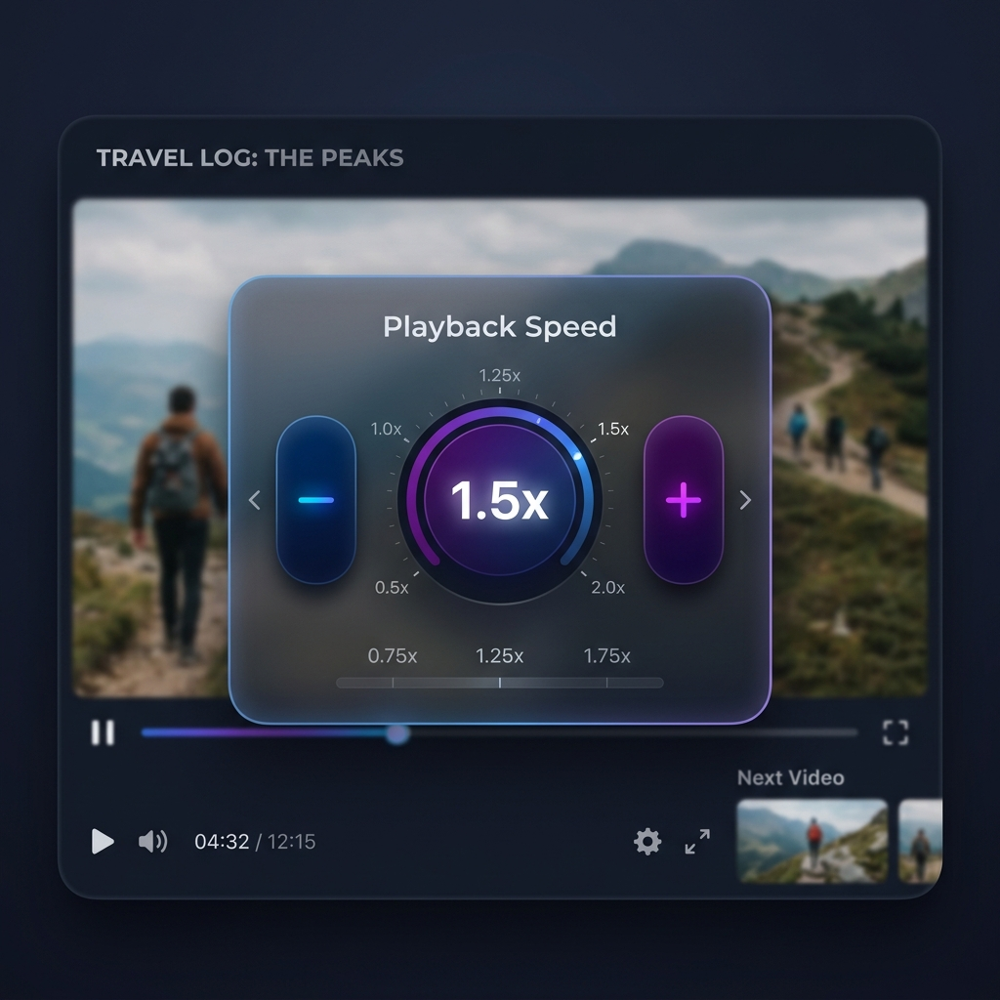

Take ultimate control of any HTML5 video player with a stunning floating widget, powerful keyboard shortcuts, and intelligent site memory.

Designed for power users who demand more than the default player controls.
A sleek, unobtrusive glassmorphism widget that dynamically positions itself away from native controls.
Use fully customizable keyboard shortcuts or hold Ctrl + Scroll Wheel to rapidly adjust speeds.
Intelligently remembers your preferred playback speeds per website or even per YouTube channel.
Zero tracking, zero analytics, zero external servers. Your viewing habits remain completely local and private.